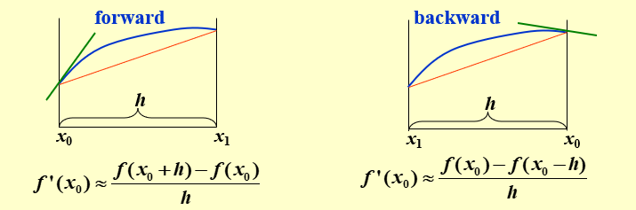
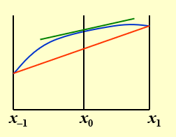
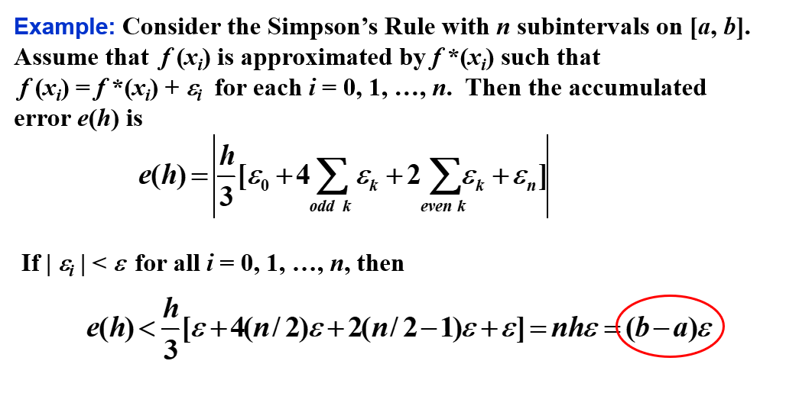
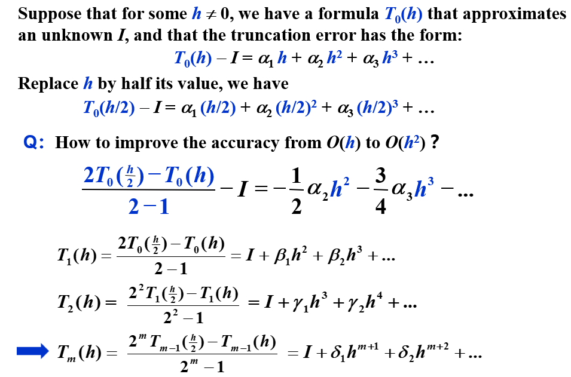
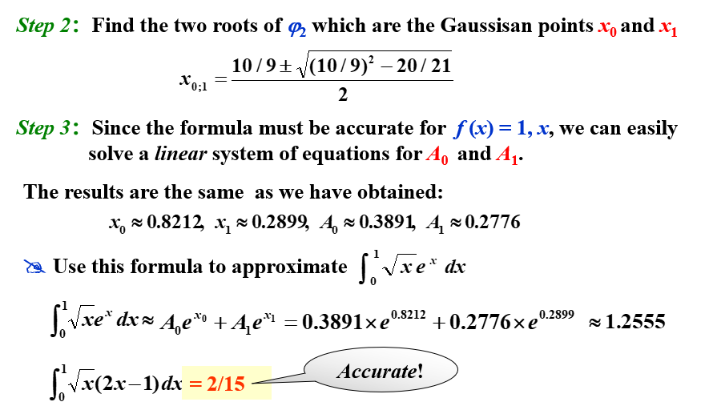
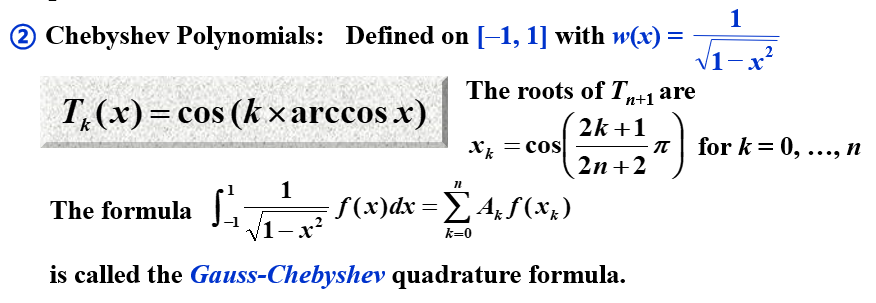

Chapter 4 数值微分与积分 | Numerical Differentiation and Integration
4.1 数值微分 | Numerical Differentiation
两点法
最简单的方法：用两个点，取\(h>0\)
Forward : \(f'(x) = \frac{f(x+h) - f(x)}{h} + O(h)\)
Backward : \(f'(x) = \frac{f(x) - f(x-h)}{h} + O(h)\)

构造由 \(x_0\) 和 \(x_0+h\) 确定的一次 Lagrange 插值多项式：
\[
\begin{aligned}
f(x) &=\frac{f(x_0)(x-x_0-h)}{x_0-x_0-h}+\frac{f(x_0+h)(x-x_0)}{x_0+h-x_0} + \frac{(x-x_0)(x-x_0-h)}{2!}f''(\xi_x) \\
f'(x) &= \frac{f(x_0+h)-f(x_0)}{h} + \frac{2(x-x_0)-h}{2}f''(\xi_x) + \frac{(x-x_0)(x-x_0-h)}{2!}\frac{\mathrm{d}}{\mathrm{d}x}f''(\xi_x) \\
f'(x_0) &= \frac{f(x_0+h)-f(x_0)}{h} - \frac{h}{2}f''(\xi_x)
\end{aligned}
\]
一般方法
用 \(n+1\) 个点，构造 \(n\) 次 Lagrange 插值多项式：
\[
\begin{aligned}f(x)&=\sum\limits_{k=0}^nf(x_k)L_k(x)+\frac{(x-x_0)\cdots(x-x_n)}{(n+1)!}f^{(n+1)}(\xi_x)\\
f^{\prime}(x_j)&=\sum\limits_{k=0}^nf(x_k)L_k^{\prime}(x_j)+\frac{f^{(n+1)}(\xi_j)}{(n+1)!}\prod_{k = 0,k\neq j}^n(x_j-x_k)
\end{aligned}\]
总体而言，更多的评估点会产生更高的准确性。另一方面，功能评估的数量增加，舍入误差也会增加。因此，数值微分是不稳定的！
三点公式
因为
\[L_0(x) = \frac{(x-x_1)(x-x_2)}{(x_0-x_1)(x_0-x_2)}\]
所以
\[L'_0(x) = \frac{2x-x_1-x_2}{(x_0-x_1)(x_0-x_2)}\]
同理有
\[L'_1(x) = \frac{2x-x_0-x_2}{(x_1-x_0)(x_1-x_2)}\]
\[L'_2(x) = \frac{2x-x_0-x_1}{(x_2-x_0)(x_2-x_1)}\]
所以
\[
\begin{aligned}
f'(x_j) =& f(x_0)\frac{2x_j-x_1-x_2}{(x_0-x_1)(x_0-x_2)} + f(x_1)\frac{2x_j-x_0-x_2}{(x_1-x_0)(x_1-x_2)} \\&+ f(x_2)\frac{2x_j-x_0-x_1}{(x_2-x_0)(x_2-x_1)}+\frac{f^{(3)}(\xi_j)}{3!}\prod_{k=0,k\neq j}^2(x_j-x_k)
\end{aligned}
\]
如果 \(x_0,x_1,x_2\) 等距，即 \(x_1=x_0+h,x_2=x_0+2h\) ，则
\[
\begin{aligned}
f'(x_j) =& f(x_0)\frac{2x_j-2x_0-3h}{2h^2} + f(x_1)\frac{2x_j-2x_0-2h}{-h^2} \\&+ f(x_2)\frac{2x_j-2x_0-h}{2h^2}+\frac{f^{(3)}(\xi_j)}{3!}\prod_{k=0,k\neq j}^2(x_j-x_k)
\end{aligned}
\]
所以
\[
\begin{aligned}
f'(x_0) &= \frac{1}{h}(-\frac{3}{2}f(x_0)+2f(x_0+h)-\frac{1}{2}f(x_0+2h))+\frac{h^2}{3}f^{(3)}(\xi_0)\\
f'(x_1) &= \frac{1}{h}(-\frac{1}{2}f(x_0)+\frac{1}{2}f(x_0+2h))-\frac{h^2}{6}f^{(3)}(\xi_1)\\
f'(x_2) &= \frac{1}{h}(\frac{1}{2}f(x_0)-2f(x_0+h)+\frac{3}{2}f(x_0+2h))+\frac{h^2}{3}f^{(3)}(\xi_2)
\end{aligned}
\]
显然，中间的点误差最小，所以，我们可以用这种方法来估计导数值，即
\[f^{\prime}(x_0)=\frac1{2h}[f(x_0+h)-f(x_0-h)]-\frac{h^2}6f^{(3)}(\xi_1)\]

二阶导数
将函数 \(f\) 在 \(x_0\) 处展开为三阶 Taylor 多项式，并求在 \(x_0+h\) 和 \(x_0-h\) 处的值：
\[\begin{gathered}
f(x_0+h)=f(x_0)+f^{\prime}(x_0)h+\frac12f^{\prime\prime}(x_0)h^2+\frac16f^{\prime\prime\prime}(x_0)h^3+\frac1{24}f^{(4)}(\xi_1)h^4 \\
f(x_0-h)=f(x_0)-f^{\prime}(x_0)h+\frac12f^{\prime\prime}(x_0)h^2-\frac16f^{\prime\prime\prime}(x_0)h^3+\frac1{24}f^{(4)}(\xi_{-1})h^4
\end{gathered}\]
将上面两式相加，得
\[f^{\prime\prime}(x_0)=\frac{f(x_0+h)-2f(x_0)+f(x_0-h)}{h^2}-\frac{h^2}{24}[f^{(4)}(\xi_1)+f^{(4)}(\xi_{-1})]\]
由于 \(f^{(4)}\) 是连续函数，所以存在 \(\xi\) 使得
\[f^{(4)}(\xi)=\frac12[f^{(4)}(\xi_1)+f^{(4)}(\xi_{-1})]\]
所以
\[f^{\prime\prime}(x_0)=\frac{f(x_0+h)-2f(x_0)+f(x_0-h)}{h^2}-\frac{h^2}{12}f^{(4)}(\xi)\]
4.3 数值积分基础 | Elements of Numerical Integration
对于没有显式原函数或原函数难以计算的函数，我们通过 数值求积（Numerical Quadrature） 来近似计算积分值：使用和 \(\sum\limits_{i=0}^n a_if(x_i)\) 来近似计算积分值 \(\int_a^b f(x)\mathrm{d}x\) 。
为了确定系数 \(a_i\) ，我们给出一种求积方法：
以第三章中给出的插值多项式 为基础，得到 Lagrange 插值多项式：
\[P_n(x)=\sum\limits_{i=0}^nf(x_i)L_i(x)\]
所以
\[\int_a^b f(x)\mathrm{d}x\approx\int_a^b P_n(x)\mathrm{d}x=\sum\limits_{i=0}^nf(x_i)\int_a^b L_i(x)\mathrm{d}x=\sum\limits_{i=0}^n f(x_i)a_i\]
误差项为
\[\int_a^b f(x)\mathrm{d}x-\sum\limits_{i=0}^n f(x_i)a_i=\int_a^b (f(x)-P_n(x))\mathrm{d}x=\int_a^b \frac{f^{(n+1)}(\xi)}{(n+1)!}\prod_{i=0}^n(x-x_i)\mathrm{d}x\]
精确度 | Precision
求积公式的精确度 (precision/degree of accuracy) 是使得求积公式对 \(x^k\) 精确成立的最大正整数 \(k\) 。
通用法则 - Newton-Cotes 求积公式
在等距节点上（\(h = \frac{b-a}{n}\) ），考察系数 \(a_i\) 的值，我们可以得到一些通用的求积法则：
\[
\begin{aligned}
a_i=\int_{x_0}^{x_n}L_i(x)\mathrm{d}x&=\int_{x_0}^{x_n}\prod_{j=0,j\neq i}^n\frac{x-x_j}{x_i-x_j}\mathrm{d}x\\
\end{aligned}
\]
令 \(x = a+th\) ，则
\[
\begin{aligned}
a_i&=\int_{x_0}^{x_n}\prod_{j=0,j\neq i}^n\frac{x-x_j}{x_i-x_j}\mathrm{d}x\\
&=\int_0^n\prod_{j=0,j\neq i}^n\frac{(t-j)h}{(i-j)h}\cdot h\mathrm{d}t\\
&=h\cdot \frac{(-1)^{n-i}}{i!(n-i)!}\cdot \int_0^n\prod_{j=0,j\neq i}^n(t-j)\mathrm{d}t\\
\end{aligned}
\]
梯形法则 | Trapezoidal Rule
当 \(n=1\) 时：
\[
\begin{aligned}
a_i&=h\cdot \frac{(-1)^{1-i}}{i!(1-i)!}\cdot \int_0^1\prod_{j=0,j\neq i}^1(t-j)\mathrm{d}t\\
a_0&=h\cdot \frac{(-1)^{1-0}}{0!(1-0)!}\cdot \int_0^1(t-1)\mathrm{d}t=\frac{1}{2}h\\
a_1&=h\cdot \frac{(-1)^{1-1}}{1!(1-1)!}\cdot \int_0^1(t-0)\mathrm{d}t=\frac{1}{2}h\\
\end{aligned}
\]
此时，\(n=1\) 的求积公式为
\[\int_a^b f(x)\mathrm{d}x = \frac{h}{2}[f(a)+f(b)]-\frac{h^3}{12}f''(\xi)\]
此即为 梯形法则（Trapezoidal Rule） 。
精确度
梯形法则的精确度为 \(k=1\) 。
Simpson 法则 | Simpson's Rule
当 \(n=2\) 时：
\[
\begin{aligned}
a_i&=h\cdot \frac{(-1)^{2-i}}{i!(2-i)!}\cdot \int_0^2\prod_{j=0,j\neq i}^2(t-j)\mathrm{d}t\\
a_0&=h\cdot \frac{(-1)^{2-0}}{0!(2-0)!}\cdot \int_0^2(t-1)(t-2)\mathrm{d}t=\frac{1}{3}h\\
a_1&=h\cdot \frac{(-1)^{2-1}}{1!(2-1)!}\cdot \int_0^2(t-0)(t-2)\mathrm{d}t=\frac{4}{3}h\\
a_2&=h\cdot \frac{(-1)^{2-2}}{2!(2-2)!}\cdot \int_0^2(t-0)(t-1)\mathrm{d}t=\frac{1}{3}h\\
\end{aligned}
\]
此时，\(n=2\) 的求积公式为
\[\int_a^b f(x)\mathrm{d}x = \frac{h}{3}[f(a)+4f(\frac{a+b}{2})+f(b)]-\frac{h^5}{90}f^{(4)}(\xi)\]
此即为 Simpson 法则（Simpson's Rule） 。
其精确度为 \(k=3\) 。
Simpson ⅜ 法则 | Simpson's ⅜ Rule
当 \(n=3\) 时，求积公式为
\[
\begin{aligned}
\int_a^b f(x)\mathrm{d}x &= \frac{3h}{8}[f(a)+3f(\frac{2a+b}{3})+3f(\frac{a+2b}{3})+f(b)]\\
&-\frac{3h^5}{80}f^{(4)}(\xi)\\
\end{aligned}
\]
其精确度为 \(k=3\) 。
Cotes 求积公式 | Cotes Rule
当 \(n=4\) 时，求积公式为
\[
\begin{aligned}
\int_a^b f(x)\mathrm{d}x &= \frac{2h}{45}[7f(a)+32f(\frac{3a+b}{4})+12f(\frac{a+b}{2})+32f(\frac{a+3b}{4})+7f(b)]\\
&-\frac{8h^7}{945}f^{(6)}(\xi)\\
\end{aligned}
\]
通用法则的一般结论
注意：当 \(n\) 是偶数时，精度的次数为 \(n+1\) ，即使插值多项式的次数至多为 \(n\) 。在 \(n\) 是奇数的情况，精度的次数仅为 \(n\) 。
4.4 复合数值积分 | Composite Numerical Integration
Newton-Cotes 以等距节点的插值多项式为基础。由于高次多项式的振荡性，这个过程在大的区间上是不精确的。为了解决这个问题，我们采用低阶 Newton-Cotes 的分段（piecewise）方法。
复合梯形法则 | Composite Trapezoidal Rule
将区间 \([a,b]\) 分成 \(n\) 个子区间，每个子区间长度为 \(h = \frac{b-a}{n}\) ，则
\[\int_{x_{k-1}}^{x_k}f(x)dx\approx\frac{x_k-x_{k-1}}2[f(x_{k-1})+f(x_k)],\mathrm{~}k=1,...,n\]
\[\int_a^b f(x)\mathrm{d}x = \sum\limits_{i=0}^{n-1}\int_{x_i}^{x_{i+1}}f(x)\mathrm{d}x=\frac{h}{2}[f(a)+2\sum\limits_{j=1}^{n-1}f(x_j)+f(b)]=\color{blue}{T_n}\]
其中，\(x_i = a+ih\) ，\(\xi\in[a,b]\) 。
误差项为
\[\int_a^b f(x)\mathrm{d}x-T_n=\frac{h^2}{12}(b-a)f''(\xi)\]
复合 Simpson 法则 | Composite Simpson's Rule
将区间 \([a,b]\) 分成 \(n\) 个子区间，每个子区间长度为 \(h = \frac{b-a}{n}\) ，则
\[\int_{x_k}^{x_{k+1}}f(x)dx\approx\frac h6[f(x_k)+4f(x_{k+\frac12})+f(x_{k+1})]\]
\[\int_a^bf(x)dx\approx\frac h6[f(a)+4\sum\limits_{k=0}^{n-1}f(x_{k+\frac12})+2\sum\limits_{k=0}^{n-2}f(x_{k+1})+f(b)]=\color{blue}{S_n}\]
其中，\(x_i = a+ih\) ，\(\xi\in[a,b]\) 。
误差项为
\[\int_a^b f(x)\mathrm{d}x-S_n=-\frac{b-a}{180}(\frac{h}2)^4f^{(4)}(\xi)\]
为简化表达，我们取 \(n'=2n\) ，则 \(h' = \frac{b-a}{n'} = \frac{h}{2}\) ，\(x_{2k} = x_k\) ，\(x_{2k+1} = x_k+\frac{h}{2}\) ，则
\[\int_a^bf(x)dx\approx\frac{h'}3[f(a)+4\sum\limits_{odd\;k}f(x_{k})+2\sum\limits_{even\;k}f(x_{k})+f(b)]=\color{blue}{S_{n'}}\]
例题
舍入误差的稳定性
所有的复合积分方法共有的一个重要性质是 舍入误差的稳定性 。

可见，误差界与 \(h\) 和 \(n\) 无关。这说明即使将一个区间分成更多子区间，也不会增加舍入误差。
4.5 Romberg 积分 | Romberg Integration
考察残差项，对于梯形法则，有
\[R_{2n}[f]=-(\frac{h}{2})^2\frac{1}{12}(b-a)f''(\xi)\approx\frac{1}{4}R_n[f]\]
所以
\[\frac{I-T_{2n}}{I-T_n}\approx\frac{1}{4}\]
即
\[I\approx\frac{4T_{2n}-T_n}{4-1}=\frac43T_{2n}-\frac13T_n=\color{blue}{S_n}\]
同理，总体上，我们有
\[\frac{4T_{2n}-T_n}{4-1}= S_n, \frac{4^2S_{2n}-S_n}{4^2-1}=C_n, \frac{4^3C_{2n}-C_n}{4^3-1}=R_n, ...\]
这里的 \(R_n\) 就是 Romberg 积分 。
所以算法为：
其中，每一步计算误差有没有到，如果没到，继续向后算。
伪代码
Target ：使用低阶公式产生高精度的结果。

4.6 自适应求积方法 | Adaptive Quadrature Methods
Target: 预测函数变化的大小，使步长适应变化的需求。
其实就是先整体估摸着求积，然后看看精度如何（此处判断精度的方式是与上一次得到的值作比较，以比值为判断条件——如果本次和上次的值差不多，说明趋于收敛）；如果不够，就再细分一下，再求积。
举个例子：
这里可以看到，\(S(a,\frac{a+b}{2})+S(\frac{a+b}{2},b)\) 逼近 \(\int_a^b f(x)\mathrm{d}x\) 的效果比 \(S(a,\frac{a+b}{2})+S(\frac{a+b}{2},b)\) 逼近\(S(a,b)\) 好15倍。
4.7 Gauss 求积 | Gauss Quadrature
Target: 通过选择 \(n+1\) 个合适的节点，使得求积公式的精度达到 \(2n+1\) 。
例子
用 Gauss 求积公式，在 \(n=1\) 的情况下估计 \(\int_{-1}^1 \sqrt{x}f(x)\mathrm{d}x\) ，则精度为3，需满足 \(f(x)=1,x,x^2,x^3\) 。
设 \(\int_{-1}^1 \sqrt{x}f(x)\mathrm{d}x \approx A_0f(x_0)+A_1f(x_1)\) ，则
\[\begin{cases}
\int_{-1}^1 \sqrt{x}\mathrm{d}x = A_0+A_1 \\
\int_{-1}^1 \sqrt{x}x\mathrm{d}x = A_0x_0+A_1x_1 \\
\int_{-1}^1 \sqrt{x}x^2\mathrm{d}x = A_0x_0^2+A_1x_1^2 \\
\int_{-1}^1 \sqrt{x}x^3\mathrm{d}x = A_0x_0^3+A_1x_1^3 \\
\end{cases}\]
由此可求得四个未知数，从而得到求积公式
但是，求解非线性方程组是很困难的，所以我们采用另一种方法。
我们可以证明： \(x_0...x_n\) are Gaussian points \(\color{blue}\text{iff}\) \(W(x)=\prod\limits_{k=0}^n\left(x-x_k\right)\) is orthogonal to all the polynomials of degree no greater than \(n.\)
所以我们就是要找到一个正交多项式，它的零点就是我们要找的节点。
回到上面那个例子，我们就是要找到一个二阶多项式，其与小于二次的多项式的内积为0。

Gauss-Legendre 求积公式
Legendre 多项式 ：\(P_n(x)=\frac{1}{2^nn!}\frac{\mathrm{d}^n}{\mathrm{d}x^n}[(x^2-1)^n]\) 。
其内积关系为：\((P_k,P_l)=\begin{cases}0, & k\neq l \\ \frac{2}{2k+1}, & k=l\end{cases}\) 。
根据 \(P_0(x)=1,P_1(x)=x\) ，我们有递推关系：
\[P_{n+1}(x)=\frac{2n+1}{n+1}xP_n(x)-\frac{n}{n+1}P_{n-1}(x)\]
这些就是Legendre多项式的集合，也就是我们要找的正交多项式。
Gauss-Chebyshev 求积公式

2025年3月14日 03:08:35
2023年12月2日 16:57:28